pn 接面二極體
第七章告訴我們 pn 接面「長什麼樣子」——能帶彎曲、空乏區、內建電位。本章回答工程師最關心的問題：當外加電壓時，pn 接面中有多少電流流動？答案就是半導體物理中最著名的公式——Shockley 理想二極體方程：$I = I_S(e^{eV_a/kT}-1)$。
本章的推導邏輯極其清晰，每一步都建立在前幾章的堅實基礎上：外加電壓→準 Fermi 能階分離（第六章）→少數載子邊界濃度改變（Shockley 邊界條件）→少數載子擴散進入中性區（第五章擴散方程）→擴散電流（第五章）→總電流。將所有前面學到的工具串聯起來，得到一個極其簡潔的結果。
在此基礎上，我們加入非理想效應（空乏區產生-復合電流、串聯電阻、高階注入）、頻率響應（擴散電容和小訊號模型）、和開關行為（反向恢復暫態）。這些是連接「理想 pn 接面物理」和「真實二極體元件行為」的橋樑。
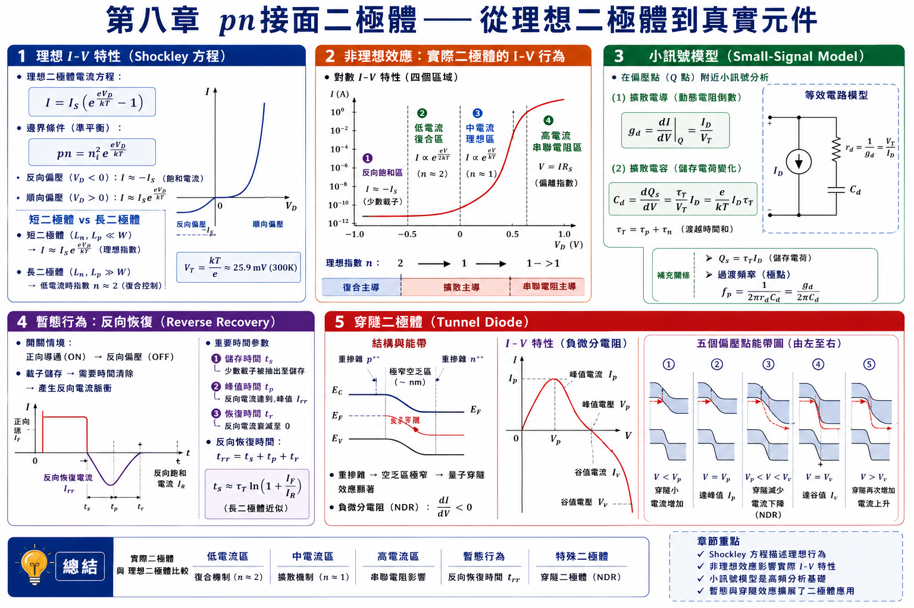
8.1.1–8.1.3 Shockley 邊界條件——電壓如何「注射」少數載子 ⭐
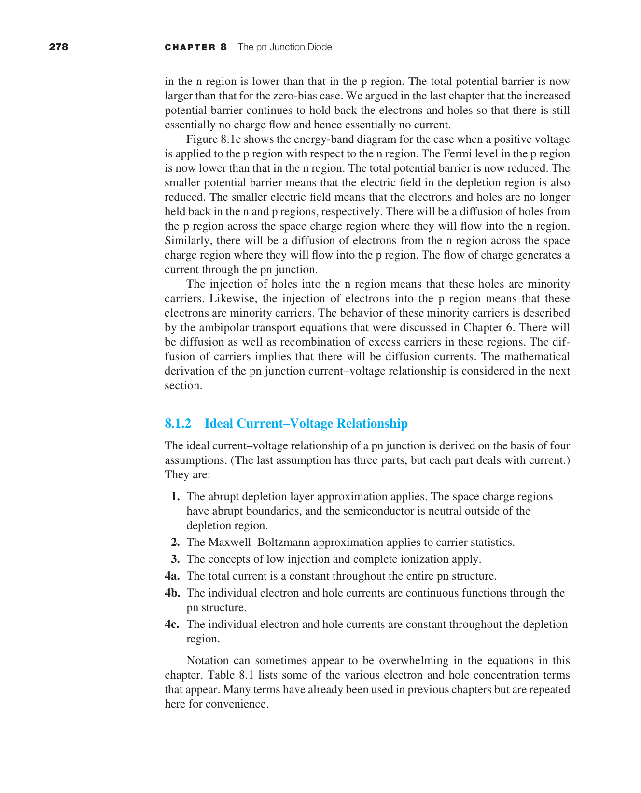
在熱平衡時（$V_a=0$），空乏區邊緣的少數載子濃度等於熱平衡值：p 側邊界的電子濃度 $=n_{p0}=n_i^2/N_a$；n 側邊界的電洞濃度 $=p_{n0}=n_i^2/N_d$。
當施加順向偏壓 $V_a>0$（p 側接正、n 側接負）時，空乏區的電位障壁從 $V_{bi}$ 降低到 $V_{bi}-V_a$。降低的障壁使得 n 側的大量電子更容易越過障壁進入 p 側，p 側的大量電洞更容易越過障壁進入 n 側→少數載子注入。
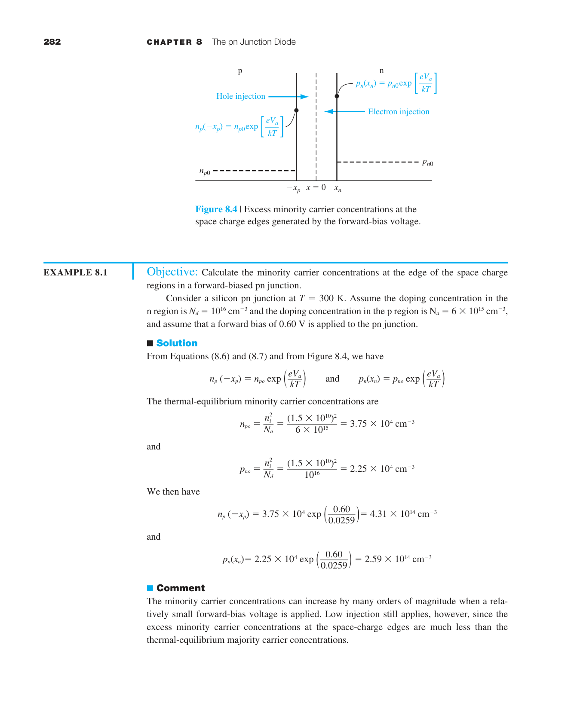
Shockley 邊界條件是本章最關鍵的公式——它將外加電壓與少數載子濃度連結起來：
這個公式的物理圖像來自第六章的準 Fermi 能階：在順向偏壓下，空乏區中 $E_{Fn}$ 和 $E_{Fp}$ 分離 $eV_a$。在空乏區邊緣，$pn = n_i^2 e^{eV_a/kT}$。因為多數載子濃度幾乎不變（低階注入），少數載子濃度必然增至 $p_{n0}e^{eV_a/kT}$。
8.1.4 理想二極體電流-電壓關係 ⭐
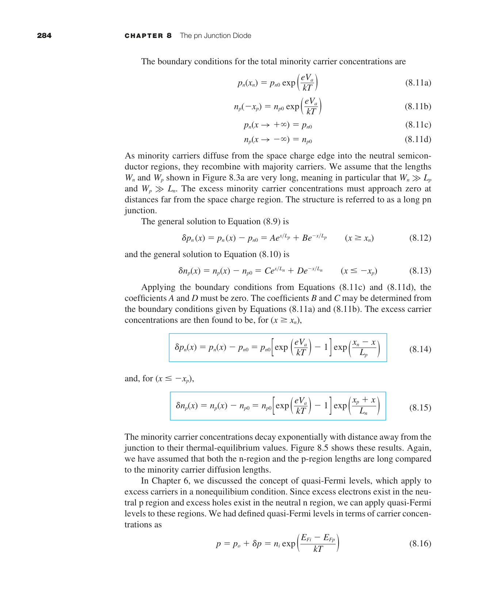
注入的過量少數載子從空乏區邊緣擴散進入中性區，同時與多數載子復合。在中性區中沒有電場→只有擴散。穩態擴散方程：$D_p\,d^2\delta p_n/dx^2 = \delta p_n/\tau_{p0}$。
解為指數衰減：$\delta p_n(x) = \delta p_n(x_n)\,e^{-(x-x_n)/L_p}$。$L_p=\sqrt{D_p\tau_{p0}}$ 是電洞擴散長度。
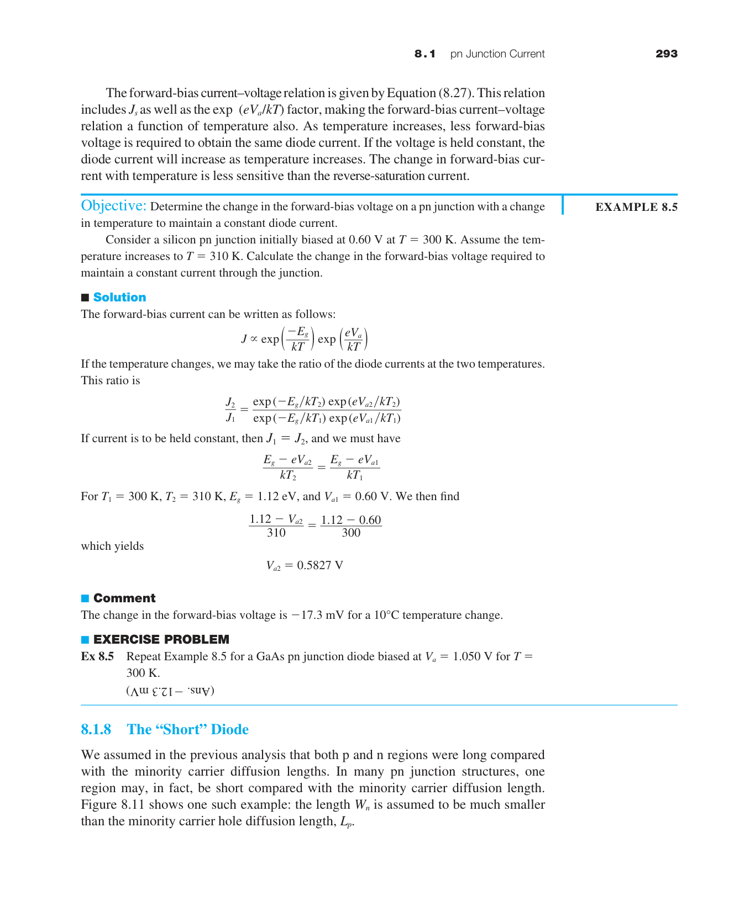
擴散電流在 $x=x_n$ 處：$J_p(x_n) = -eD_p(d\delta p_n/dx)|_{x_n} = (eD_p/L_p)\,\delta p_n(x_n) = (eD_p p_{n0}/L_p)(e^{eV_a/kT}-1)$。
同理可得 $J_n(-x_p)$。總電流為兩者之和：
$I_S$ 的物理意義：$I_S$ 是反向飽和電流——當 $V_a$ 為大負值（逆偏）時 $I\to -I_S$。$I_S\propto n_i^2\propto e^{-E_g/kT}$→對溫度極其敏感。室溫 Si pn 接面的 $I_S$ 通常在 $10^{-15}$–$10^{-9}$ A 範圍，取決於面積和摻雜。
8.1.5 溫度效應與串聯電阻——真實二極體的 I-V 特性
真實二極體的 I-V 特性偏離理想方程。兩個最重要的修正來自溫度和串聯電阻。
溫度效應
$I_S$ 對溫度極其敏感：$I_S \propto T^3 e^{-E_g/kT}$（$T^3$ 來自 $N_c N_v\propto T^3$ 以及 $D,L$ 的溫度關係）。取對數微分：
室溫下 Si：$E_g/kT^2 = 1.12/(0.026\times300) \approx 0.144$ K$^{-1}$。即溫度每升高 1°C，$I_S$ 增大約 14.4%。近似規則：溫度每升 10°C，$I_S$ 約增加一倍（$2^{10\times0.0072} \approx 1.05$，更精確是 ∼7%/°C 對 $I_S$ 的影響）。
順向電壓降的溫度係數：在固定電流下，$V_D$ 隨溫度變化：
這正是矽二極體可作為廉價溫度感測器的原因——測量固定電流下的 $V_D$ 變化即可推算溫度。
串聯電阻 $R_s$
中性 n 區和 p 區、以及金屬接觸都有歐姆電阻。高電流時 $IR_s$ 壓降不可忽略→有效接面電壓 $=V_a-IR_s $R_s$ 的典型值：小訊號二極體 ∼1–5 Ω，功率二極體 ∼0.01–0.1 Ω。$R_s$ 可從 I-V 曲線的高電流偏離程度中提取：$\Delta V = IR_s$。 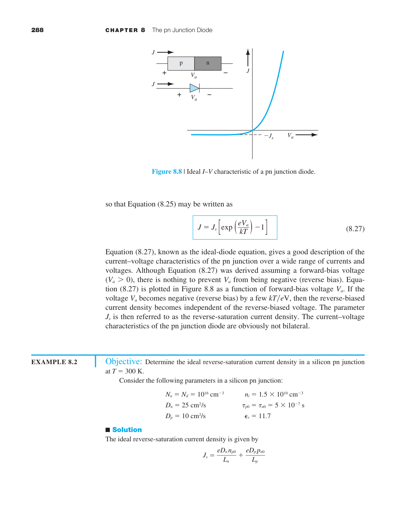
8.1.6 物理總結——電流機制的完整圖像
在進入非理想效應之前，讓我們先整合 8.1 的所有結果。pn 二極體的電流由以下步驟串聯而成：
① 外加電壓改變接面處的少數載子濃度（Shockley 邊界條件）→$np = n_i^2 e^{eV_a/kT}$。
② 注入的少數載子以擴散方式遠離接面（濃度梯度驅動）→擴散長度 $L = \sqrt{D\tau}$ 決定了載子能走多遠。
③ 擴散電流正比於邊界處的濃度梯度→梯度正比於 $e^{eV_a/kT}-1$→指數 I-V 關係。
④ 少數載子在中性區內復合→電流隨距離衰減→被多數載子傳導到外部電路。
8.1.8 短二極體（$W_n \ll L_p$）
前面推導的理想二極體方程假設中性區寬度 $W_n$ 和 $W_p$ 遠大於擴散長度 $L_p$ 和 $L_n$。但在許多實際元件中，中性區很短——例如薄基區的 BJT。
關鍵差異：在長二極體中，少數載子在中性區內指數衰減（$e^{-x/L}$）。在短二極體中，少數載子到達金屬接觸前幾乎不復合→濃度分布近似線性。
邊界條件：$\delta p(0) = p_{n0}(e^{eV_a/kT}-1)$，$\delta p(W_n) = 0$（金屬接觸處快速復合）。線性梯度：
因此短二極體的電流：
對比長二極體：$I = (eAD_p p_{n0}/L_p)(e^{eV_a/kT}-1)$。差別只在分母是 $W_n$ 還是 $L_p$——物理上完全合理：短二極體的梯度更大（$W_n < L_p$）→電流更大。
8.2 產生-復合電流——空乏區中的電流
理想二極體方程只考慮了中性區中的擴散電流。但空乏區內部也有電流——來自深層陷阱能階的 SRH 產生和復合（第六章）。
順向偏壓——復合電流
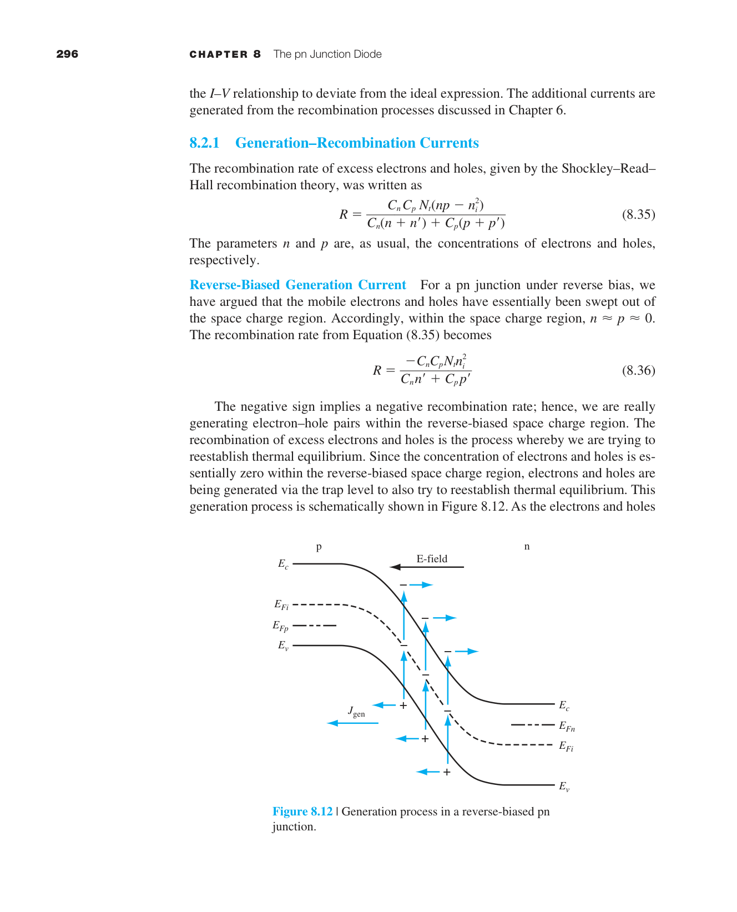
在順向偏壓下，空乏區中的 $np>n_i^2$→淨復合。復合率最高的地方在 $n\approx p$ 的區域（空乏區中的某處）。復合電流 $I_{\text{rec}}\propto e^{eV_a/2kT}$——斜率只有理想擴散電流的一半。在低順向偏壓時（$V_a<0.4$ V），$I_{\text{rec}}$ 可能大於擴散電流→非理想因子 $n\approx2$。
反向偏壓——產生電流
在反向偏壓下，空乏區中的 $np 理想二極體方程假設低階注入：注入的少數載子濃度 $\delta p$ 遠小於多數載子濃度 $n_0$。當順向電壓增大到使 $\delta p \approx n_0$ 時，高注入效應開始出現： ① 注入的少數載子改變了空乏區邊緣的電場→有效接面電壓降低→電流增長速度減慢（偏離 $e^{eV_a/kT}$ 指數）。 ② 多數載子濃度必須增加以維持電中性→多數載子也參與擴散→雙極傳輸效應更加顯著。 ③ I-V 關係從 $I \propto e^{eV_a/kT}$ 過渡到 $I \propto e^{eV_a/2kT}$——斜率減半，類似復合電流的行為，但物理機制完全不同。8.2.2 高注入效應——當理想方程失效
8.3 小訊號模型——pn 二極體的 AC 行為 ⭐
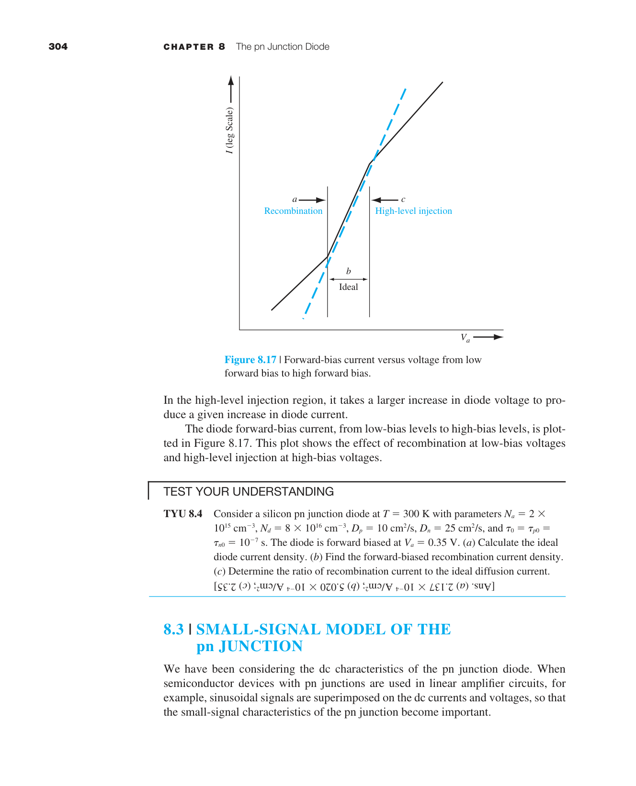
當二極體操作在 DC 偏壓點 $(V_{DQ}, I_{DQ})$ 附近疊加一個小 AC 信號時，非線性的指數關係可以線性化。
小訊號等效電路：順向偏壓的 pn 二極體在 AC 小訊號下等效為以下元件的並聯/串聯組合：
- $r_d$（擴散電阻）並聯 $C_d$（擴散電容）：這兩個元件描述中性區中少數載子的充放電行為。
- 串聯 $r_s$（串聯電阻）：中性區的歐姆電阻 + 接觸電阻。高頻時 $r_s$ 限制了二極體的品質因子 $Q$。
- 並聯 $C_j$（接面電容）：空乏區電容。反向偏壓時 $C_j$ 主導；順向偏壓時 $C_d \gg C_j$。
擴散電導 $g_d$
$g_d$（單位：S，西門子）或等效擴散電阻 $r_d=1/g_d=0.026/I_{DQ}$ Ω。$I_{DQ}=1$ mA→$r_d=26$ Ω。$I_{DQ}=1$ µA→$r_d=26$ kΩ。偏壓電流直接控制小訊號電阻。
擴散電容 $C_d$——二極體速度的物理限制
順向偏壓下注入中性區的過量少數載子需要時間來建立和消散→表現為電容：
對 $I_{DQ}=1$ mA，$\tau_{p0}=1$ µs：$C_d = (1/0.026)\times10^{-3}\times10^{-6} = 38$ nF。這遠大於典型的 $C_j$（∼pF 級）。
截止頻率：二極體的小訊號響應在 $f_c = 1/(2\pi r_d C_d) = 1/(2\pi\tau_{p0})$ 處開始衰減。對 $\tau_{p0}=1$ µs：$f_c \approx 160$ kHz。這就是為什麼普通 pn 二極體不適合高頻整流——需要使用壽命極短的快速恢復二極體或蕭特基二極體。
• 接面電容 $C_j$（第七章）：空乏區邊界空間電荷隨電壓變化。主導反向偏壓和低順向偏壓。$C_j\propto1/\sqrt{V_{bi}+V_R}$。
• 擴散電容 $C_d$（本章）：中性區中儲存的過量少數載子隨電流變化。主導順向偏壓。$C_d\propto I_{DQ}$。
• 順向偏壓下 $C_d\gg C_j$。這就是為什麼 pn 二極體在順向操作時速度受限——擴散電容使二極體無法快速響應高頻信號。蕭特基二極體（第九章）沒有少數載子儲存→$C_d\approx0$→開關速度遠快。
8.4–8.5 電荷儲存暫態與穿隧二極體
反向恢復暫態——為什麼二極體不能瞬間關斷
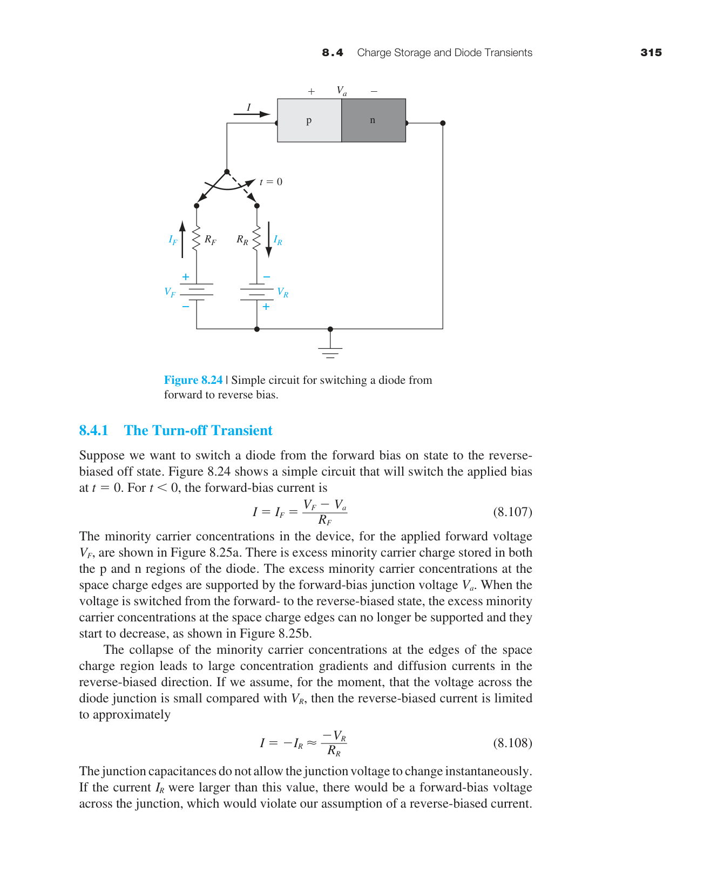
當二極體從順向突然切換到反向時，順向期間在中性區儲存的大量過量少數載子必須先被移除，二極體才能開始阻斷反向電壓。移除過程包括兩個階段：
儲存時間 $t_s$（storage time）：過量少數載子被反向電流抽取，或透過復合消失，直到空乏區邊緣的濃度降至熱平衡值。$t_s \approx \tau_{p0}\ln(1+I_F/I_R)$（$I_F$=順向電流，$I_R$=反向抽取電流）。
下降時間 $t_f$（fall time）：空乏區電容充放電的時間。總反向恢復時間 $t_{rr}=t_s+t_f$。快速開關二極體需要短 $\tau_{p0}$——可透過掺金（Au）或電子輻照引入復合中心來降低壽命。
穿隧二極體（Tunnel Diode / Esaki Diode）
當 pn 接面兩側都極重摻雜（$>10^{19}$ cm⁻³）→空乏區極窄（<10 nm）→量子穿隧成為主導的電流機制。
NDR（負微分電阻）的完整物理圖像：
① 零偏壓：n 側導帶中的電子與 p 側價帶中能量對應的空態對齊→穿隧可以雙向進行→淨電流為零。
② 小順向偏壓（峰值電流 $I_P$）：偏壓使 n 側導帶底與 p 側價帶頂對齊→最大數量的電子態與空態對齊→穿隧電流達到峰值 $I_P$。
③ 中等偏壓（NDR 區域）：偏壓繼續增大→n 側導帶底高於 p 側價帶頂→可穿隧的態逐漸減少→電流反而下降→這就是負微分電阻。
④ 較大偏壓（谷值電流 $I_V$）：穿隧幾乎停止（沒有重疊的態），但熱離子發射電流開始增大。電流達到谷值 $I_V$。
⑤ 大偏壓：普通擴散電流（類似普通二極體）主導→電流隨電壓指數增長。
峰谷比 $I_P/I_V$ 是穿隧二極體的關鍵品質指標。典型值：Ge 穿隧二極體 ∼8:1，GaAs ∼15:1。$I_P/I_V$ 越大→NDR 越明顯→振盪器的功率效率越高。
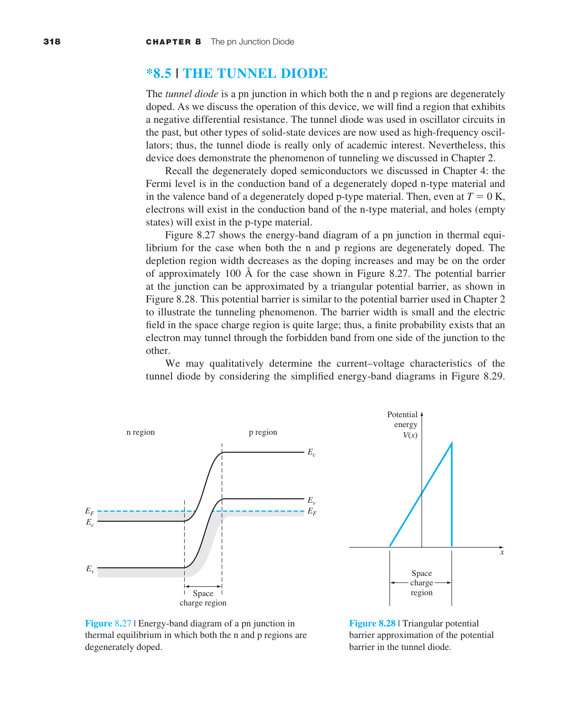
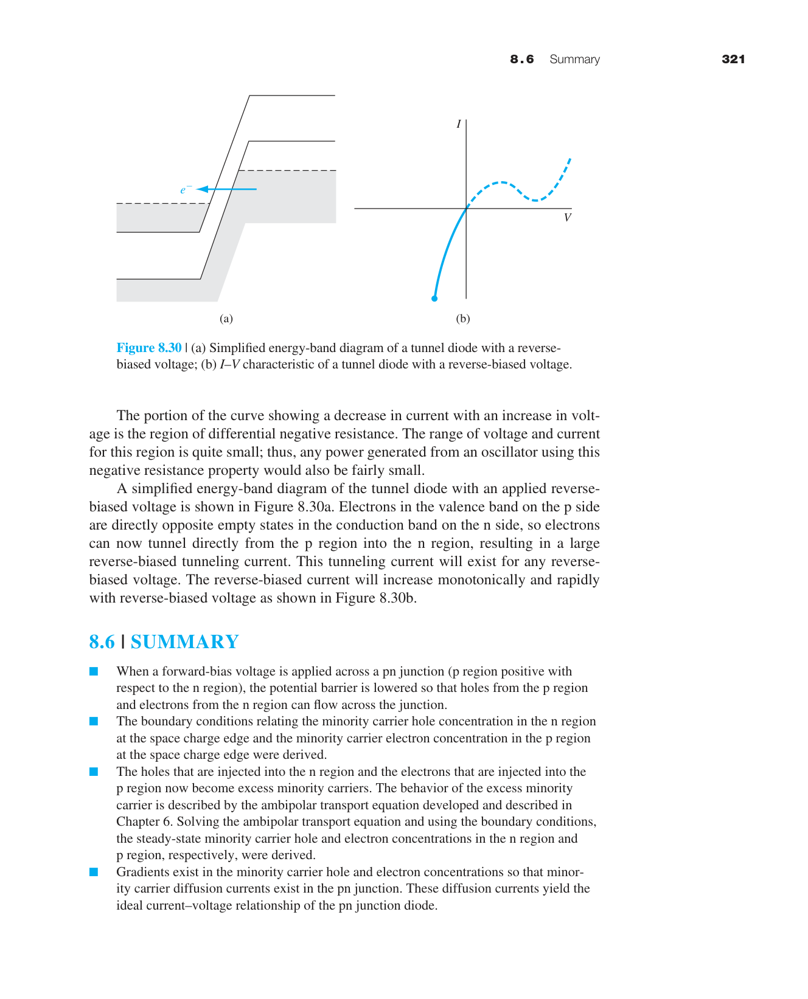
本章摘要
- Shockley 邊界條件：$p_n(x_n)=p_{n0}e^{eV_a/kT}$。$V_a=0.6$ V→邊界濃度增 $10^{10}$ 倍。這是指數 I-V 的根源。
- 理想二極體方程：$I=I_S(e^{eV_a/kT}-1)$。$I_S\propto n_i^2$。所有 pn 接面分析的基石。
- 溫度效應：$I_S\propto T^3 e^{-E_g/kT}$。$\partial V/\partial T\approx-2$ mV/°C→可用作溫度感測。
- 非理想效應：低電流復合（$n\approx2$）→中電流理想擴散（$n\approx1$）→高電流串聯電阻→極高電流高階注入。
- 產生-復合電流：順偏 $I_{\text{rec}}\propto e^{eV_a/2kT}$。逆偏 $I_{\text{gen}}=en_iW/\tau_0$（對 Si 常大於 $I_S$）。
- 小訊號模型：$g_d=I_{DQ}/V_T$，$r_d=V_T/I_{DQ}$，$C_d=(e/kT)I_{DQ}\tau_{p0}$。$C_d$ 限制二極體頻率響應。
- 反向恢復：$t_s\approx\tau_{p0}\ln(1+I_F/I_R)$。少數載子儲存導致開關延遲。
- 穿隧二極體：重摻雜→極窄空乏區→量子穿隧→負微分電阻→高頻振盪。